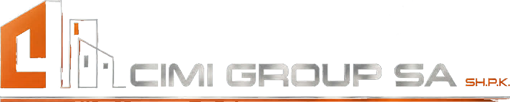

Jashtë linje
Nuk ka lidhje interneti
Duket se jeni jashtë linje. Kontrolloni lidhjen tuaj dhe provoni sërish — faqja do të ngarkohet kur të riktheheni në linjë.

Jashtë linje
Duket se jeni jashtë linje. Kontrolloni lidhjen tuaj dhe provoni sërish — faqja do të ngarkohet kur të riktheheni në linjë.